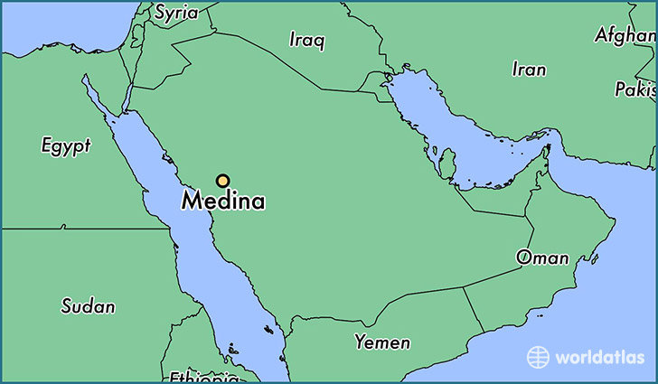

RiyadhThe city of Riyadh is the captial of Saudi Arabia. The population of Riyadh is 7.2 million, it has many landmarks including the 267m high Al Faisaliah Center. |
|
 MadinaThe city of Madinah is on the West side of Saudi Arabia. In the center of Madina is the famous 'Al-Masjid an-Nabawi' it is a major islamice pilgramiage site. It is the 4th most populated city in the country, with a population of 1.4 million. |
Eastern ProvinceThe Eastern Province which is also called the Eastern Region is the furthest to the east of the 13 provinces in Saudi Arabia. It is the largest in terms of area and the third most populated, right after Riyadh which holds the second place. The population of the Easter Province is 4.9 million. |